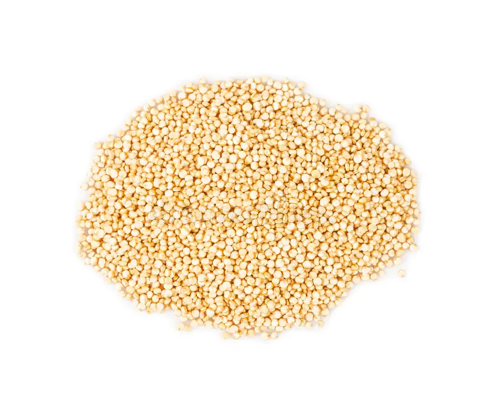

1. Seasons for Growing Quinoa

Quinoa is a versatile crop that grows well in various climates, including temperate and subtropical regions. It can be grown in the following seasons:
- Spring: Ideal for planting in temperate climates, allowing the crop to mature during the warmer months.
- Summer: In regions with mild summers, quinoa can be planted early in the season for a summer harvest.
- Autumn: Quinoa can also be grown as a late-season crop in regions with cooler autumns.